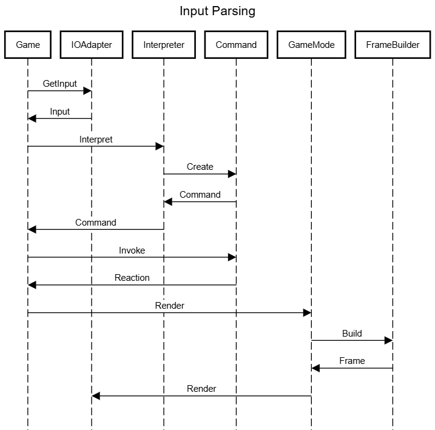

Architecture
Overview
NetAF has a simple architecture and understanding it will help when developing games.
A Game encapsulates all assets and provides top level logic. When the Game is executing the following loop runs for the duration of the execution:
- The Game renders the current GameMode. There are many different instances of IGameMode that provide different functionality, but generally they can be split in to two types: Interactive and Information.
- The Game then accepts user input by using an instance of IIOAdapter to receive input from the user.
- The Game then and passes the input to its own Interpreter (for handling global input) and the Interpreter for the current GameMode (for handling mode specific input) in order to process it.
- The Interpreter tries to parse the input and if successful return an instance of Command.
- The returned Command is then invoked and returns a Reaction that details the result. Some instances of ICommand deal with interactions between assets. In this case an Interaction between an Item and a target is invoked and the result returned the ICommand which will return an appropriate Reaction.
- The Game processes the Reaction. Some instances of Reaction will trigger the Game to change GameMode to either display the Reaction or enter anotherGameMode.
- When a GameMode is rendered a IFrameBuilder can be used to generate an instance of IFrame.
- An instance of IFrame can be rendered on to an IIOAdapter which will display the IFrame to the user.

Extensibility
NetAF is designed to be extensible.
- ICommand allows commands to be added.
- IInterpreter allows commands to be interpreted.
- IGameMode allows custom modes to be added to a Game.
- IFrameBuilders allows custom instances instances of IFrame to be created which are used to render the game state to the user.
- IIOAdaper provides an interface to get input from the user and render the game state back to them. SystemConsoleAdapter provides a wrapper around System.Console, however custom implementations can be added to support different types of application.